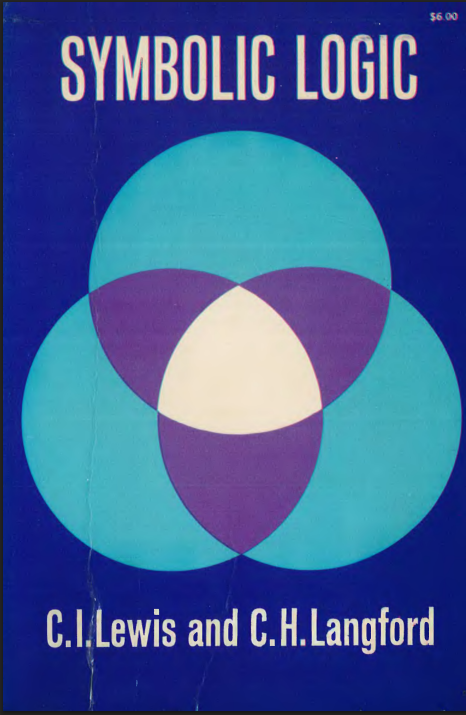
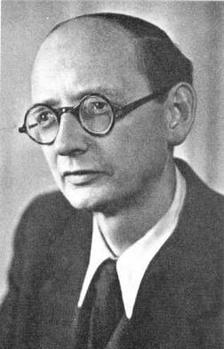
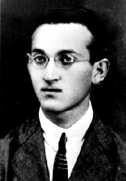
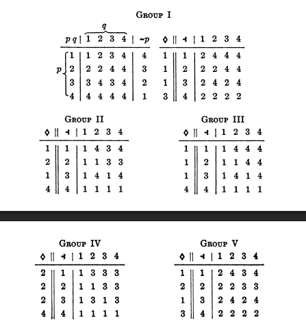
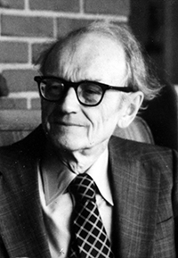
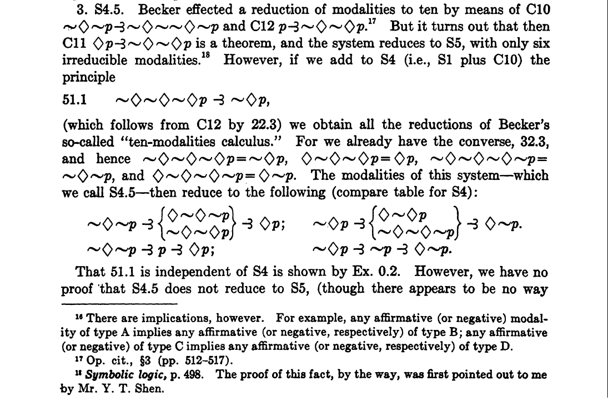
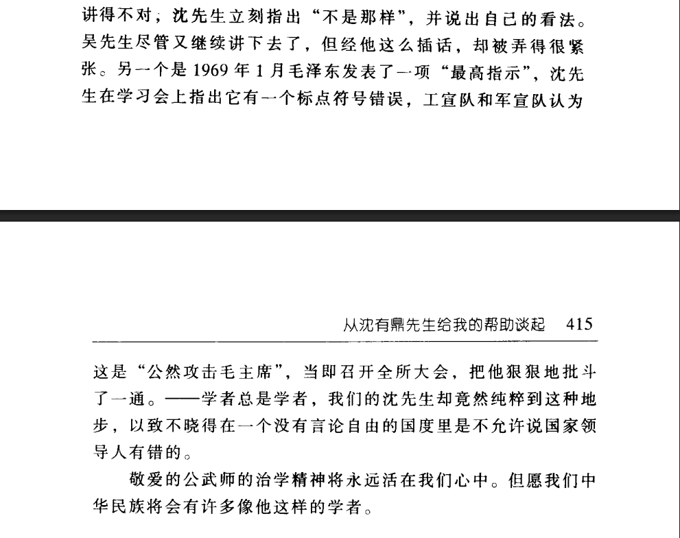

The Axiomatic Interdependence of S5 in Early Modal Logic
Zhu Rui 祝瑞
AWPL 2026
@ Southwest University
Chongqing
April. 2026
Introduction & Motivation

- Context: C.I. Lewis & C.H. Langford, Symbolic Logic (1932), Appendix II.
- Post : Modal collapse issue in A Survey of Symbolic Logic (1918):
$p \prec q = \sim q \prec \sim p $
where $p \prec q :=\Box(p \rightarrow q)$
$~~~~~~~~~~\sim p := \neg \Diamond p $ - Lewis removes one direction :
$ (\sim q \prec \sim p)\prec (p \prec q)$ - Becker: removal is correct but left an open position (eine offene Stelle) for "Modal Iteration"
Lewis's System B
Primitives
- Propositional variables:
p, q, r, … - Negation: $\sim$ (This is classical negation (it is false), which is different from the previous $\sim$ that means "it is impossible")
- Possibility ("self-consistency"): $\Diamond$
- Conjunction (product): $pq$ or $p \cdot q$
Definitions
- d1. $p \lor q \ .=. \ \sim(\sim p \sim q)$
$p \lor q := \neg(\neg p \land \neg q)$ - d2. $p \prec q \ .=. \ \sim\Diamond(p \sim q)$
$\Box(p \to q) := \neg\Diamond(p \land \neg q)$ - d3. $p = q \ .=: \ (p \prec q)(q \prec p)$
$\Box(p \leftrightarrow q) := \Box(p \to q) \land \Box(q \to p)$ - d4. $p \supset q \ .=. \ \sim(p \sim q)$
$p \to q := \neg(p \land \neg q)$
Postulates & Rules
Postulates (Axioms)
- B1. $pq \prec qp$
- B2. $pq \prec p$
- B3. $p \prec pp$
- B4. $(pq)r \prec p(qr)$
- B5. $p \prec \sim\sim p$ (later shown redundant)
- B6. $(p \prec q)(q \prec r) \prec (p \prec r)$
- B7. $p(p \prec q) \prec q$
Rules of Inference
- Sa — Substitution: Uniform substitution for variables.
- Sb — Substitution of Equivalents: If $A = B$, substitute freely.
- Ad — Adjunction: From $A$ and $B$ infer $A \cdot B$.
- Smp — Strict Modus Ponens: From $A$ and $A \prec B$ infer $B$.
B8 and B9 were given by Lewis but are not used in modal reduction.
Reflexivity
It is known today that the canonical formula of reflexivity ($ p \supset \Diamond p$) is deducible in Lewis's systems of strict implication. But deriving it in the syntactic system was non-trivial.
Reconstruction of the Proof (Key Steps):
- $~~\sim p \prec q \ ~.~ \prec ~.~ \ \sim q \prec p~~~~~~~~$ (Prop. 12.2)
- $~~p = \sim(\sim p)~~~~~~~~~~~~~~~~~~~~~~~~~~~~~~$ (Prop 12.3)
- $~~p ~.~\prec~.~ \Diamond p~~~~~~~~~~~~~~~~~~~~~~~~~~~~~~~$ (Prop 18.4)
- $~~p \prec \Diamond p ~.~ \prec~.~ p \supset \Diamond p$
Proposition numbers follow Symbolic Logic (1932).
Oskar Becker's Challenge (1930)
- "The Open Position": Lewis's original system allowed infinite distinct modalities.
- Becker proposed three reduction axioms to "close" the system.
| Lewis Notation | Becker Notation | Modern Name |
|---|---|---|
| C10 $~~ \sim\Diamond\sim p\prec \sim\Diamond\sim\sim\Diamond \sim p$ | 1.92 $~~\sim - p < \sim -\sim - p$ | Axiom 4 (Transitivity) |
| C11 $~\Diamond p \prec \sim\Diamond\sim\Diamond p$ | 1.9 $~~- \sim p < \sim\sim p$ | Axiom 5 (Euclidean) |
| C12 $~~p \prec \sim\Diamond\sim\Diamond p$ | 1.91$~~ p < \sim\sim p$ | Axiom B (Symmetry) |

Becker was a follower of Husserl's phenomenology and Brouwer's intuitionism
- 1.9 reduces Lewis's system to only six modalities.
- 1.91 encapsulates the intuitionistism of Brouwer (Brouwersche Axiom).
- 1.92 captures the self-reflective nature of a proof system: if $p$ is necessary (proven), then it is necessarily necessary.
Becker's "Ten-Modality" Error
Becker correctly identified that C11 collapses modalities to 6 (System S5).
The Error: He claimed that adding C10 + C12 (4 + B) creates a distinct "Ten-Modality Calculus" between S4 and S5.
Strength Diagram of Becker’s Modalities
He overlooked the derivation of $\Diamond p \rightarrow \Box\Diamond p $ after adding axiom 4 and B.
Correction
The correction is firstly recorded in Lewis's Symbolic Logic (Appendix II).
It demonstrates purely syntactically that within Lewis' reflexive system: $ \{C10, C12\} \vdash C11 $
The "Ten-Modality Calculus" does not exist; it is exactly S5.
This was discovered by a Chinese Logician. His name is Shen Yuting.

The Proof Reconstruction
The Formation of S4 and S5
- Polish logician Mordechaj Wajsberg wrote to C. I. Lewis, showing —via matrix/algebraic methods— that strict implication cannot be reduced to material implication. He also presented a system equivalent to S5.
- C. I. Lewis: Three postulates cannot be derived in systems A or B.
- C11 or C12 cannot be derived in system B + C10. (S4 differs from S5)
- C12 and C10 can be derived in system B + C11. (Inverse of Shen’s result)
- Presented S1–S5 in Appendix II: S4 = B + C10; S5 = B + C11 (or equivalently C10 + C12).


William T. Parry and Shen Yuting
William T. Parry: Independently provided Groups I, II, and III. Later proved S4 has 14 modalities, S4.5 has 12, and showed the non-equivalence of S2 and S3.
He confirmed Shen’s priority: "The proof ... was first pointed out to me by Mr. Y. T. Shen."
Shen’s Unique Role: While others relied on algebra, Shen used pure syntactic reasoning in the pre-semantic era.
Parry is well known for analytic implication (AI), yet wrote in a memoir during his final illness: "Another student of Sheffer's also developed the basic conceptions of AI—at first independent of my work—viz. Y. T. Shen. We exchanged ideas; I received much more from him than he from me."


From Syntax to Semantics
Shen, together with Lewis, Wajsberg, and Parry, worked “blindly” before model theory. Their systems—especially S4 and S5—were validated decades later.
Algebraic/Topological Semantics (Tarski & McKinsey, 1944):
S4 corresponds to topological interior operators; S5 to “almost discrete” spaces.
Relational Semantics (Kripke, 1959-1963):
Axioms correspond to frame conditions:
- T (B1–B7): Reflexive
- 4 (C10): Transitive
- B (C12): Symmetric
- 5 (C11): Euclidean
Any reflexive relation that is transitive and symmetric is Euclidean.
Conclusion
- Shen Yuting correctly identified the interdependence of modal axioms overlooked by Becker.
- He contributed to the canonical hierarchy: S4 is independent, but S4 + Axiom B equals to S5.
- This clarification was essential for the later development of rigorous modal semantics by McKinsey, Tarski and Kripke.
A lost chapter in the history of modal logic, should be, restored.
Shen YUting's Pure Integrity

Chairman Mao issued a supreme directive. During a study session, Mr. Shen pointed out a punctuation error in it. The worker and military propaganda teams immediately accused him of “openly attacking Chairman Mao.” They promptly held an all-institute struggle meeting and ruthlessly denounced and attacked him in a vicious criticism session.
References
- Becker, O. (1930). “Zur Logik der Modalitäten”. Jahrbuch für Philosophie und Phänomenologische Forschung, 11, 497–548.
- Cresswell, M. (2019). “Modal Logic before Kripke”. Organon F, 26(3), 323–339.
- Kripke, S. A. (1959). “Semantic analysis of modal logic (abstract)”. JSL, 24, 323–324.
- Kripke, S. A. (1963). “Semantical Analysis of Modal Logic I”. ZMLG, 9, 67–96.
- Lewis, C. I. (1918). A Survey of Symbolic Logic. Berkeley.
- Lewis, C. I., & Langford, C. H. (1932/1959). Symbolic Logic. Dover.
- McKinsey, J. C. C. (1934). “A reduction in the postulates for strict implication”. BAMS, 45.
- McKinsey, J. C. C., & Tarski, A. (1944). “The algebra of topology”. Annals of Mathematics, 45, 141–191.
- McKinsey, J. C. C., & Tarski, A. (1948). “Some theorems...”. JSL, 13, 1–15.
- Parry, W. T. (1934). “The postulates for strict implication”. Mind, 43.
- Parry, W. T. (1939). “Modalities in the Survey System”. JSL, 4.
- Parry, W. T. (1989). “Analytic implication”. In Directions in Relevant Logic.
- Shen, Y. (1992). Shen Youting Wenji. Beijing.
- Tarski, A. (1938). “Der Aussagenkalkül und die Topologie”. Fundamenta Mathematicae, 31.